Can your diff(1) do this?!
Improving software review & QA with diffoscope
Chris Lamb
@lolamby
Debian Project Leader
foss-north.se
April 2018
Gothenburg, Sweden
Hallå!
Open source developer for 10+ years
Debian Project Leader
opensource.org board member
Freelance software developer

Why?
Source code available for free software…
… everyone runs binaries
Do they correspond?
Build farms
Developer's machines
Blackmail, law-enforcement…
1. Ensure build have identical results
2. Multiple parties compare results
3. Attacker must infect everybody simultaneously
Identical results?


Archive formats
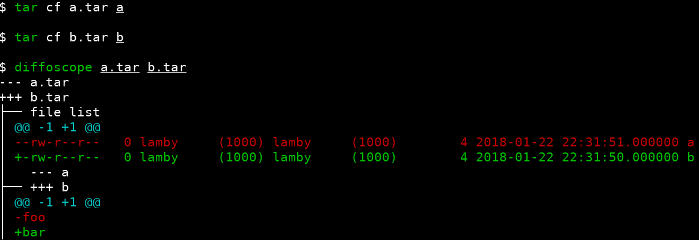Compressed formats
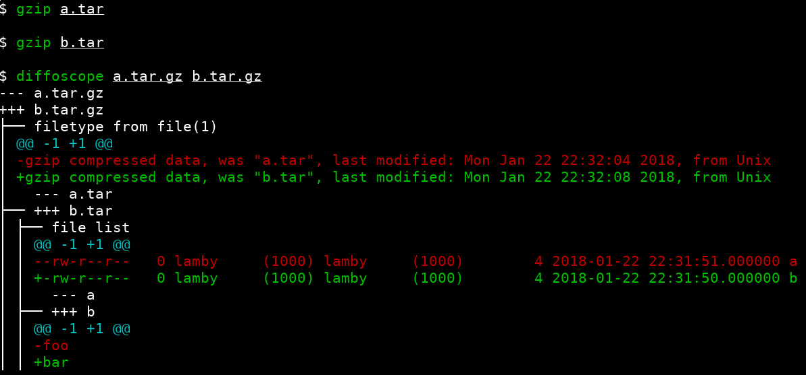Recursive
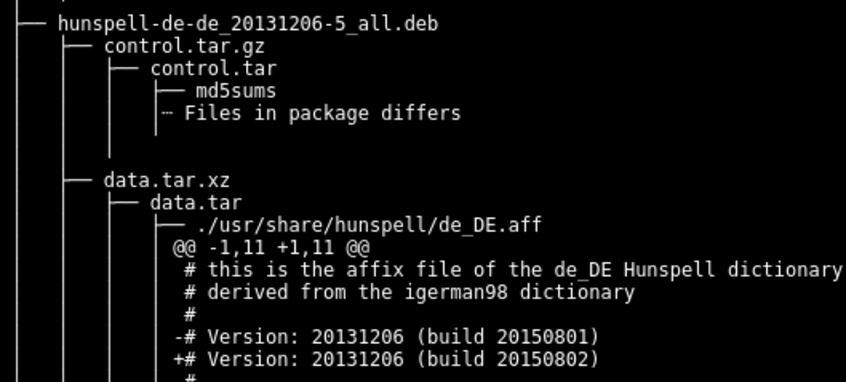Line ordering
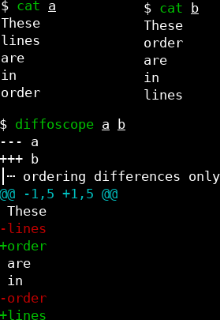HTML output

Android boot ROMs, Android APKs, ar archives, bzip2 files, Coreboot cbfs, CPIO archives, Dalvik dex file, Debian packages, device (mknod), device tree globs, directories, docx, ELF binaries, ext filesystem images, fontconfig cache dirs, fonts, gettext catalogues, GIF images, Git repositories, GZip files, Haskell binaries, ICC colour profiles, ISO images, Java, bytecode, Javascript, JSON, LLVM binaries, Macho binaries, Mono executables, odt documentens, Ogg borbis, OpenSSH keys, Pascal binaries, PDF files, PGP/GPG keys, PNG images, PostScript, RPM images, R statistical data, Rust binaries, SQLite databases, squashfs images, symlinks, tar archives, tcpdump dumps, text files, XML documents, XZ files, ZIP archives …
Android images
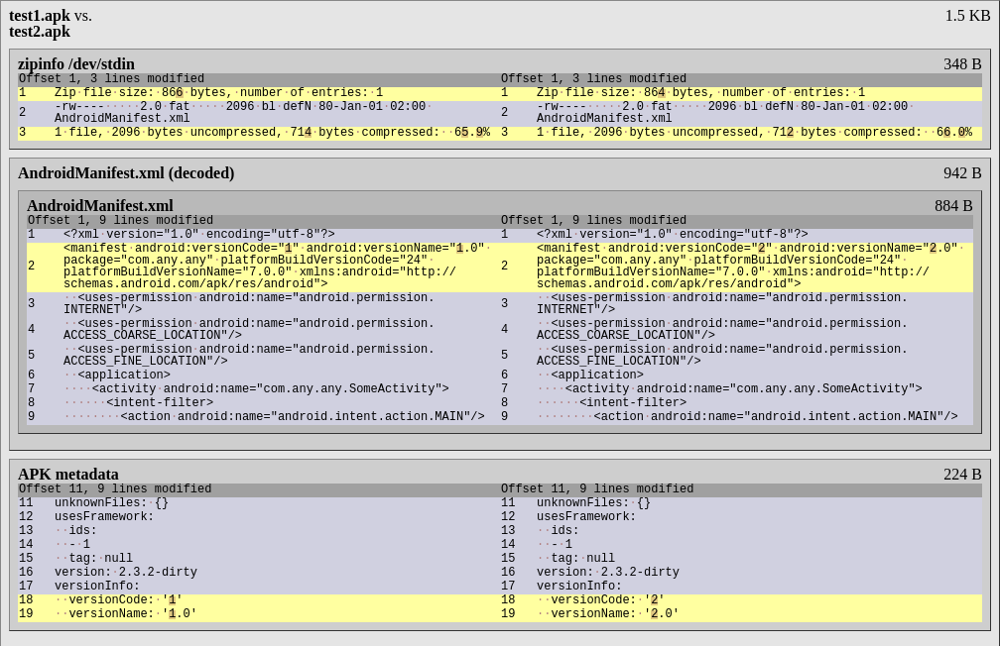Berkeley DB databases
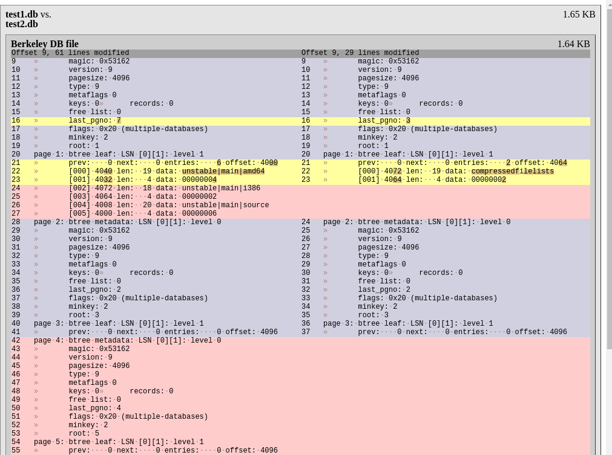Microsoft Word .docx
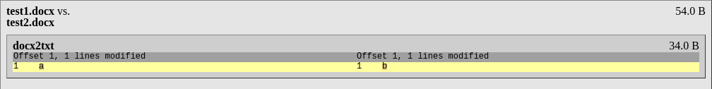Ebooks

Mono binaries
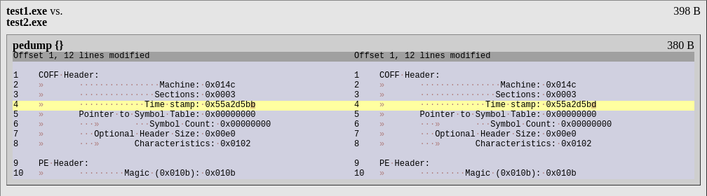git(1) repositories
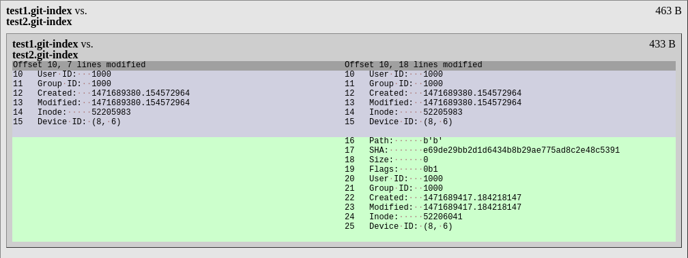
Gnumeric spreadsheets
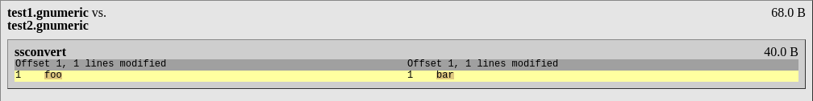ISO images
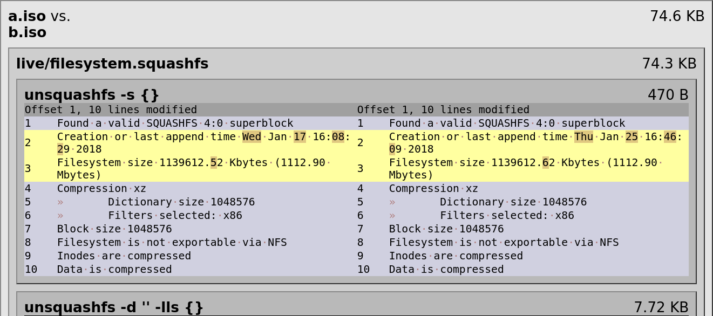JSON
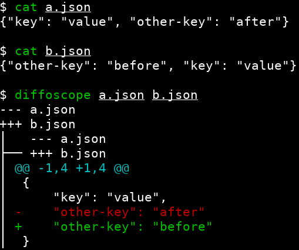OpenDocument text documents
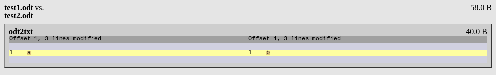Ogg audio files
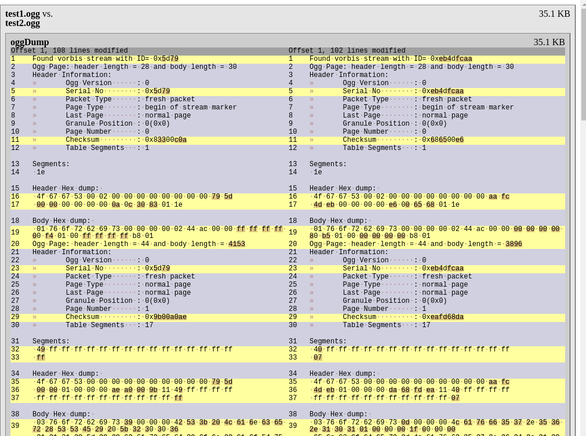tcpdump(1) capture files
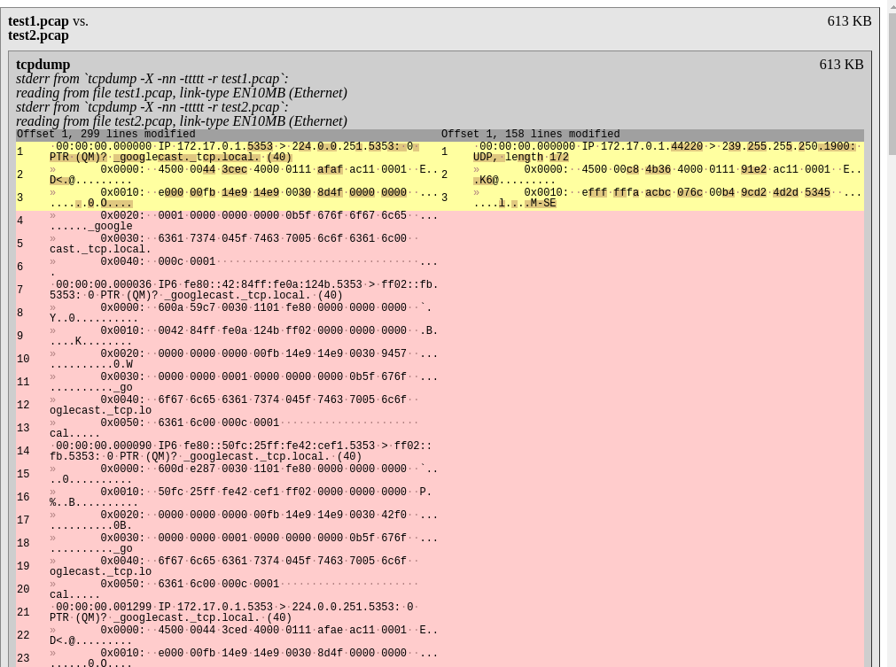
XML documents
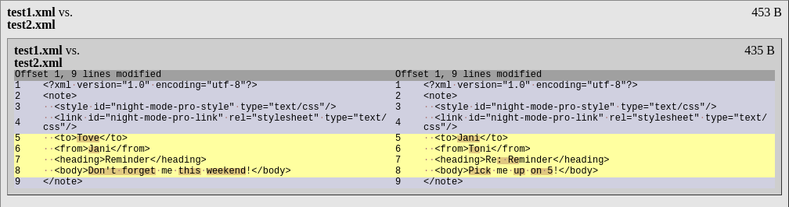Using diffoscope for QA
Just see changes you expect
Seeing "no" changes
Security releases
Security "releases"
Getting started
try.diffoscope.org
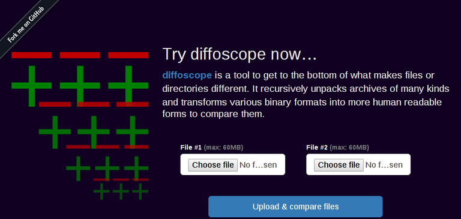
Current status
Parallel processing
Multiple previous attempts…
… Juliana Oliveira working on this now